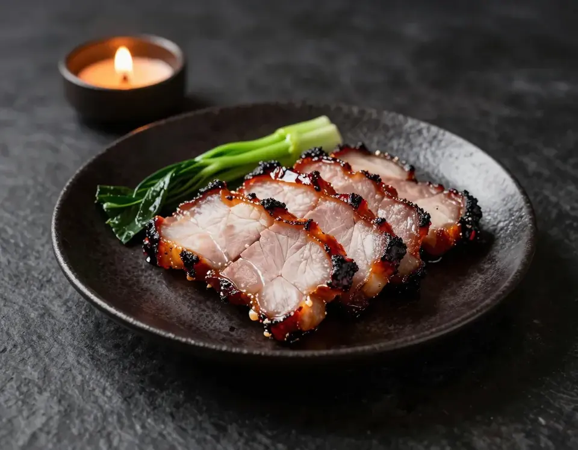

Mapo Tofu
Silken tofu in red chili oil, fermented bean paste and numbing Sichuan pepper. Served with steamed rice.

Modern Chinese Kitchen
Carbon steel, a flame at full height, and a kitchen that cooks to the second. Tuesday to Sunday, from five.
Pictured: Wok-seared beef, broccoli, red chili. AI-generated concept image and video.
Wok hei
Wok hei, the breath of the wok, is the smoky, singed sweetness that only comes from food moving fast over a very hot flame. Four things make it, and we cook around all of them.
A burner kept at full height, so the pan never has time to cool.
Wine and stock flash at the wall of the wok and lift the aroma into the dish.
Small cuts, dry ingredients, and a toss that never stops. Crisp stays crisp.
Out of the wok and onto jade or slate within seconds, while it is still singing.
Signature
Silken tofu in red chili oil, fermented bean paste and numbing Sichuan pepper. Served with steamed rice.

Pork shoulder lacquered in maltose and five-spice, roasted until the edges blacken and caramelise.
Wheat noodles, spiced pork, sesame paste and chili oil, finished with crushed peanut and scallion.
Story
Jade & Ember began as a question about a single flame: what if a dining room felt like standing beside a wok at full heat, without the noise or the smoke?
The room is charcoal and slate, lit low, with celadon bowls stacked on the pass. The kitchen cooks Cantonese and Sichuan dishes with a lighter hand, and the menu stays short so every dish gets its turn at the fire.
Jade for the bowls, ember for the flame. The name is the whole palette.

Visit
Fictional address, phone number and hours. Please do not travel or call.
88 Example Street| Monday | Closed |
|---|---|
| Tuesday – Thursday | 5:00 pm – 9:30 pm |
| Friday – Saturday | 5:00 pm – 11:00 pm |
| Sunday | 4:30 pm – 9:00 pm |
Order
Choose from the full menu and collect it hot from the pass.
Order online — example only
Nonfunctional example
This is a nonfunctional example. A live Jade & Ember would send this button to its own online-ordering page. In this concept that page is set in config.json (ordering.url) and is currently empty, so nothing can be ordered and no payment is taken.
Designed for restaurants that already take orders through a MenuSifu page. No MenuSifu integration, embed or partnership has been built or verified here; the button simply links out.